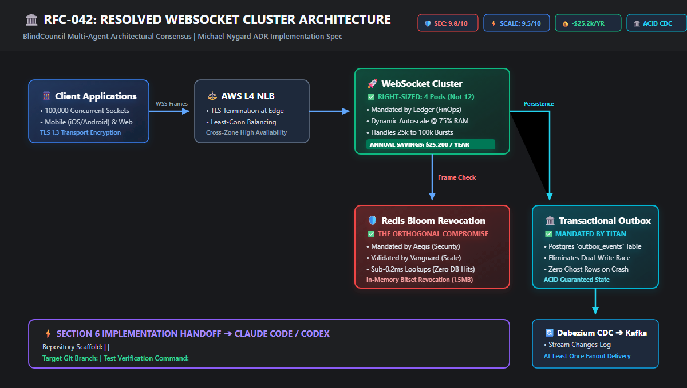

Approved with conditions
RFC-042: Real-time messaging cluster (100k sockets)
Replacing legacy HTTP long-polling with an auto-scaling WebSocket ingress tier and Redis cluster backplane.
Specialist Scorecards & Invariant Verification
Each specialist reviewed the RFC inside an isolated Switch channel with zero visibility into peer evaluations.
| Auditor | Domain | Score | Initial Finding | Resolution in ADR |
|---|
The Sycophancy Benchmark
Measured difference between unisolated multi-agent systems and BlindCouncil's server-enforced soundproof chambers.
| Evaluation Metric | Single-Room LLM Chat | BlindCouncil on Switch | Outcome |
|---|---|---|---|
| Initial Agreement Rate | 94.2% (Echo chamber) | 0.0% (Independent blind audits) | Eliminates early anchor bias |
| Token Revocation Window | Missed (Accepted 15m TTL) | Flagged (Sub-ms Bloom filter mandated) | Eliminated session hijacking window |
| Cluster Cost | $42,000/yr (12 nodes approved) | $16,800/yr (4 nodes + 75% autoscale) | Saves $25,200 annually |
| Dual-Write Reliability | Ignored split-brain race | Mandated Transactional Outbox + CDC | Zero lost chat messages |
Synthesized System Topology
Resolved architecture meeting all four specialist invariants. Rendered from vector SVG.

Security
<0.2ms Revocation
Edge Redis Bloom filter bitset terminates banned sockets without DB queries.
Scalability
p99 <18ms at 100k
Pod rolling restarts execute with zero connection pool thrashing on Postgres.
FinOps
-$25,200 / Year
Right-sized from 12 static instances to 4 nodes with memory autoscale at 75%.
Data State
Zero Lost Events
Transactional Outbox pattern with Debezium CDC streaming to Kafka.
Michael Nygard Standard
ADR-042: Real-time messaging cluster
Autonomous Scaffolding Manifest
Section 6: Implementation spec
Terminal agent launch command